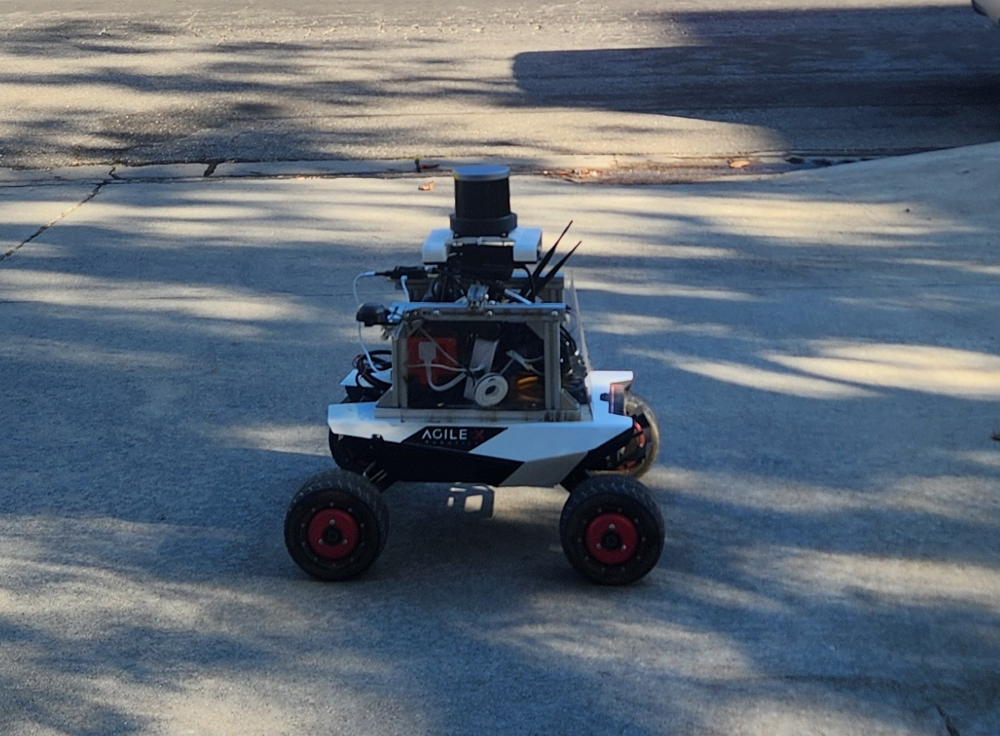
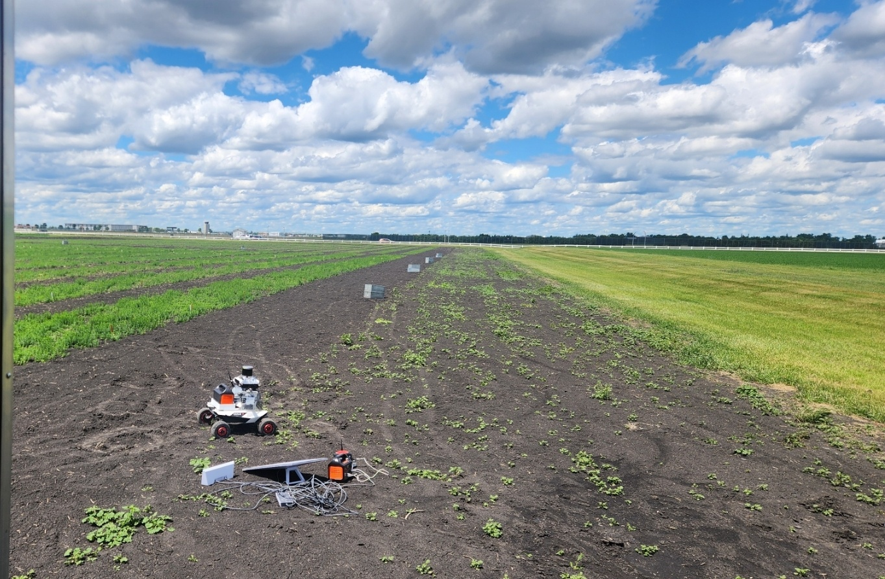

A field-deployed robotic assistant for large-scale row-crop farms, built around a Vision-Language Navigation (VLN) stack that lets the robot follow natural-language instructions while traversing kilometer-scale fields. The platform fuses four RGBD stereo cameras, LiDAR, and RTK GNSS for robust localization and obstacle avoidance under repetitive crop structures and partial GNSS degradation, with an onboard NVIDIA Jetson handling perception and navigation in real time. A Starlink uplink at the home station provides internet connectivity, while a dedicated radio link keeps the robot in continuous contact with the operator for live status monitoring and remote intervention.

The robot is equipped with a sensor and compute suite designed for all-day autonomous operation in unstructured outdoor farmland:

Deployed across open row-crop fields in Fargo, ND, the system pairs onboard autonomy with a lightweight field infrastructure: a Starlink terminal at the home station supplies internet connectivity for remote access and data offload, while the dedicated radio link gives the operator real-time visibility into robot state and location even at the far edges of the field, independent of cellular coverage.
On top of this hardware stack, the robot's Vision-Language Navigation module grounds natural-language instructions (e.g. "go to the irrigation pivot at the north end of row 12") in the live RGBD/LiDAR map, enabling instruction-following navigation without hand-authored waypoints for every task.